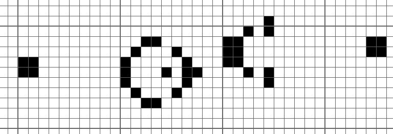

はじめに
実は「実装してみた」要素の少ない紹介記事であるがお許しを(盛大なタイトル詐欺)。
Life Game(ライフゲーム)とは？
ライフゲーム(Conway's Game of Life)は1970年にイギリスの数学者ジョン・ホートン・コンウェイ(John Horton Conway)が考案した生命の誕生、進化、淘汰などのプロセスを簡易的なモデルで再現したシミュレーションゲームである。単純なルールでその模様の変化を楽しめるため、パズルの要素を持っている。
Wikipedia より
というもの、と言ってもわからないと思うので、ひとまずルールを書いておく。説明が簡潔で理解しやすかったため、これもまた Wikipediaから。 (一部視認性のために改変済み)最後に完成形のスクリーンショットを貼っておくので、イメージとしてはそれを参照して欲しい。
ライフゲームでは初期状態のみでその後の状態が決定される。碁盤のような格子があり、一つの格子はセル（細胞）と呼ばれる。各セルには8つの近傍のセルがある (ムーア近傍) 。各セルには「生」と「死」の2つの状態があり、あるセルの次のステップ（世代）の状態は周囲の8つのセルの今の世代における状態により決定される。
セルの生死は次のルールに従う。
また、中央のセルにおける次のステップでの生死の例を示す。生きているセルは■、死んでいるセルは□で表す。
- 誕生
- 生存
- 過疎
- 過密
死んでいるセルに隣接する生きたセルがちょうど3つあれば、次の世代が誕生する。
生きているセルに隣接する生きたセルが2つか3つならば、次の世代でも生存する。
生きているセルに隣接する生きたセルが1つ以下ならば、過疎により死滅する。
生きているセルに隣接する生きたセルが4つ以上ならば、過密により死滅する。
取り敢えずやりたいこと
さて、ライフゲームを作るに当たって、画面の確保、描画などはDXライブラリに丸投げする予定なので、処理機構を考える。
やりたいこととしては、
すべてのセルを見る
→周りにある、生きているセルのカウント
→基準のセルが生きているか確認
→カウントに基づいて生死を決定する
こんな感じ。
セルは2次元配列を用意すれば良いが、取り敢えずvectorでいいだろう。ここで、セルのカウント後セルの状態を変更するのだが、変更後の状態をそのまま適応すると次のセルについて確認するときに影響してしまうので、コピーを用意してそちらに書き込むことにする。
つまり、セルの状態を保存するモノを2つ用意して、1つ目を見て生きたセルのカウントをし、その結果を2つ目に書き込んで最後に反映する。
vector<vector<bool> > map(ARRAY_SIZE, vector<bool>(ARRAY_SIZE, false));
vector<vector<bool> > map2(ARRAY_SIZE, vector<bool>(ARRAY_SIZE, false));書いてみよう
とりあえず周辺の8つをチェックしたいが、取り敢えず自分を含めた9個をforで走査し自分自身を除くことにする。
配列外参照チェックの処理を書くのが面倒なので、配列外参照をしたときに例外を投げてくれるatメンバ関数で若干楽をしてみる。
下に挙げるのはライフゲームの核となる部分。
for (int y = 0; y < ARRAY_SIZE; y++)//ARRAY_SIZE:これの自乗個の
for (int x = 0; x < ARRAY_SIZE; x++) {//マス上で動かす。
int count = 0;
for (int y2 = -1; y2 < 2; y2++) {
for (int x2 = -1; x2 < 2; x2++) {
try
{
if (map.at(y + y2).at(x + x2)
&& !(x2 == 0 && y2 == 0))count++;//周辺の生きたセルの数
}
catch (const std::exception&) {}//ここで若干楽をする
}
}
if (map[y][x]) {//↓過疎および過密判定
if (count <= 1 || count >= 4)map2[y][x] = false;
}
else if (count == 3)map2[y][x] = true; //誕生部分
}
map = map2;改善
ここまでにおいては、最初のパターンを起動時に配置していたのだが、自由に操作するために書き込みモードと実行モードの2つのモードを用意することにした。
enumでWRITE,MAINの2つを宣言しswitch-caseで管理する。
また垂直同期待ちのトグル、マウスホイールによる更新頻度の調整機能も付けた。
ここでとある先輩から上下左右の端を繋げてはどうかとアドバイスが来たので、先程の周囲の8つをチェックする部分をこのように書き換えた。
if (map.at((ARRAY_SIZE + y + y2) % ARRAY_SIZE).at((ARRAY_SIZE + x + x2) % AR
RAY_SIZE) && !(x2 == 0 && y2 == 0))count++;これで範囲内に収まるようになった。
パターンの紹介
ライフゲームのルールは前述したようにかなり簡素なものだが、これだけで様々なセルの動く様子を観察することができる。Wikiにもたくさん例があるのだが、ここでも取り上げておく。
- 固定物体
- 振動子
- 移動物体
- 繁殖型
名前の通り、変化しないパターンである。その代表格が「ブロック」これはそれぞれの生きている(黒)セルの周辺に3つ生きているセルがあるので、どれも生存し続ける。
一定の周期で元に戻るパターン。代表格としては「ブリンカー」誕生と過疎を繰り返し、縦と横交互に縦棒ができる。
名前の由来は、画面の更新頻度が高いモニタでこれを観察するとかなり点滅して見えるからである。
同じような形を保ったまま移動するパターン。代表格が「グライダー」高確率で発生しやすく、最小であるため大人気。
生きているセルに隣接する生きたセルが4つ以上ならば、過密により死滅する。
スペースさえあれば無限にセルが増え続けるパターン。代表格は「ゴスペル(又はゴスパー)のグライダー銃」これは無限にグライダーを打ち続ける機構で、初めて発見された増殖型であるため発見者の名前がつけられた。
まとめ
ライフゲームを楽しめる Golly というフリーソフトがあり、こちらはかなり高速に動かせるのでオススメしたい。後はニコニコ動画に「ライフゲームの世界」というタイトルの分かりやすく面白い動画があるので、こちらを見るとなおライフゲームの面白みが分かるかと思う。